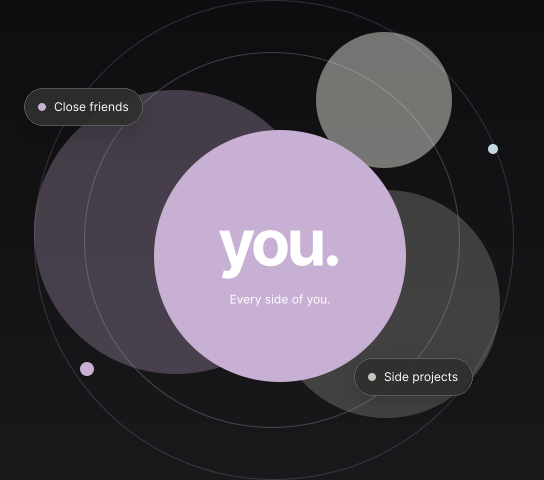
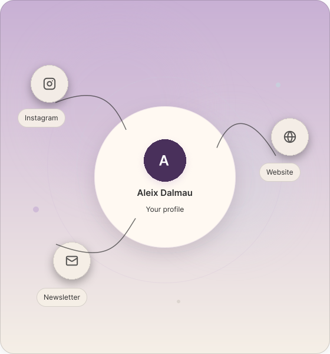
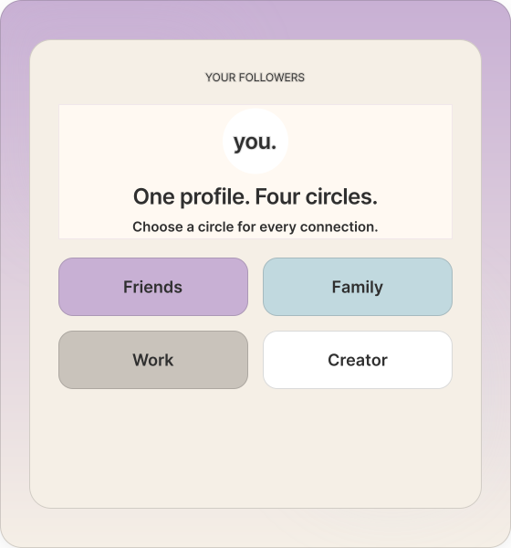
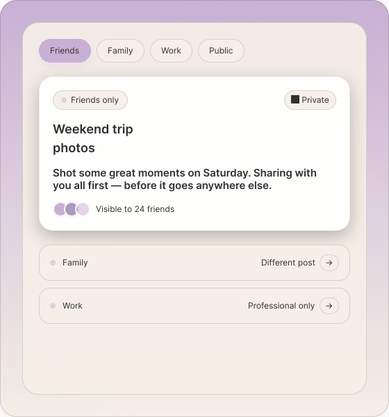
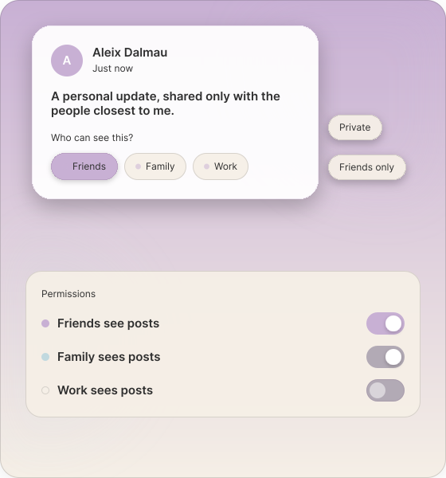
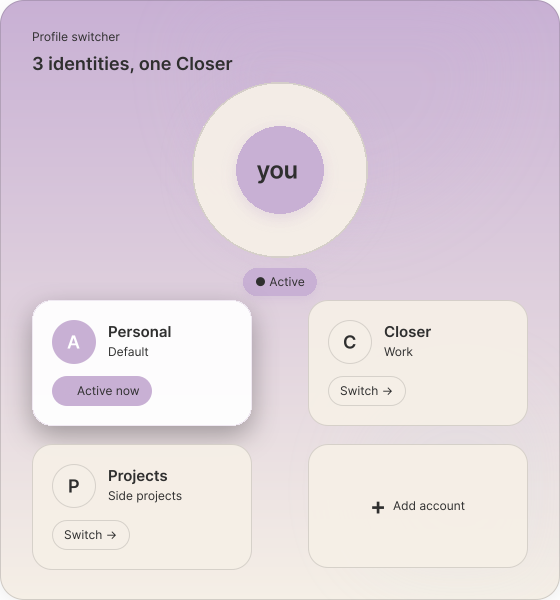

Put your
people closer.
One profile for every circle, project, and part of your life.

Put your
people closer.
One profile for every circle, project, and part of your life.
One profile. Every connection.
Your way, always.
Neither should
your social world be.
Bring your online life together without mixing everything up. A place thoughtful enough for all the sides of you.
All social media in one profile
Your links, interests, and different sides. Finally, a place for all of you.
All social media in one profile
Your links, interests, and different sides. Finally, a place for all of you.

Categorize your followers
Friends, family, collaborators. Give every connection a circle of its own.

Categorize your followers
Friends, family, collaborators. Give every connection a circle of its own.
Separate content between different people
Share the right things with the right people. Keep the rest for another circle.
Separate content between different people
Share the right things with the right people. Keep the rest for another circle.

Privacy completely customizable
Decide what each circle can see. Your boundaries belong to you.

Privacy completely customizable
Decide what each circle can see. Your boundaries belong to you.
Multiple accounts in one profile
Keep work, life, and everything in between connected but distinct.
Multiple accounts in one profile
Make room for every project and passion, without starting over.

Built by people.
For people.
We are a small group of developers and founders building the social app we wish we had. One that respects every part of who you are.
Closer is still taking shape. We are listening, designing, and bringing it to life together.
Build the next layer of connection
Closer brings social identity, privacy, and audience management together in one scalable platform — making room for every account and every circle.
Scalable multi-account architecture
One platform that grows with every identity a user manages — personal, professional, creator, and beyond.
Privacy-first differentiation
Audience-level permissions make personal boundaries central to the product experience.
Clear path to community growth
An invitation-led beta provides a focused starting point for building and learning with communities.
Be part of
what comes next.
Closer isn’t live yet. Join the beta list and help us build a more personal corner of the internet.